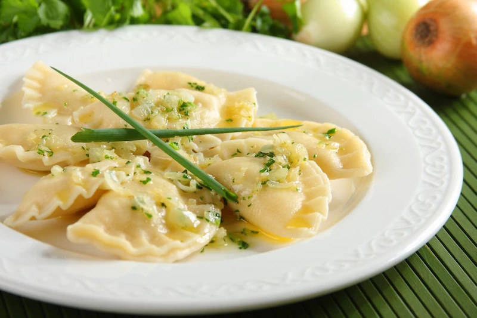

Author: Przepisy.pl
Sift flour, add water and egg. Knead and knead the dough into a uniform mass.
Boil the potatoes. Dice the onion and fry it in a pan. Pass the cooled potatoes through a food processor together with the cottage cheese and onion, add crushed Knorr mini cubes and pepper.
Divide the dough into several pieces, roll each piece thinly and cut out circles about 5 centimeters in diameter. Put the stuffing in the middle of the disc. Fold in half, pinching the edges carefully.
Drop dumplings in batches into boiling salted water, stir. When they float to the top, cook for 2 more minutes. When ready, remove with a slotted spoon. Chop the parsley. Serve dumplings topped with browned onion and sprinkled with parsley.